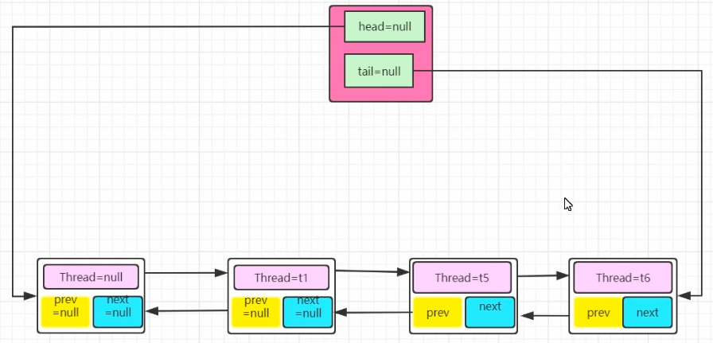

Lock
JUC
java-utils-concurrent
- 分类
- locks
- atomic
- executors
- collections
- tools
AQS（AvstractQueueSynchronizer）
关键属性
队列头
队列尾
锁状态
一个队列（双向链表实现）

公平锁lock步骤：
- 第一次加锁时，跟队列无关
- 此时状态肯定是未加锁
- 头尾并没有初始化,都是null
- 正常加锁，将状态设置为有锁
- 非第一次加锁，
- 获取锁状态可能是未加锁
- 正常加锁，将状态设置为有锁
- 获取锁状态可能是已加锁
- 入队
- 如果队列是空
- 创建一个内容为空的Node结点，放入队列
- 将当前线程创建成一个Node结点，放入队列
- 队列不是空
- 将当前线程创建成一个Node结点，放入队列
- 再加锁尝试
- 判断它的前一个Node的内容是不是空的，如果是则表示下一个就是这个线程，
- 再试一下加锁能成功那很好
- 失败的话我就老实在队里呆着了，park睡眠了
为什么aqs的队列不可能只有一个元素？
队列的第一个是一个内容为空的Node结点，表示当前正在持有锁的线程
在排队中能获取锁的永远是队列中的第二个
公平锁和非公平锁
非公平锁
主要是在进入aqs的队列前可能会成功抢夺到资源，如果进入队列之后就没有机会了
两次可能插队的可能：
- 第一次加锁时，不判断当前锁状态，直接尝试cas加锁
- 尝试加锁失败后，在初始化队列前再次尝试cas加锁